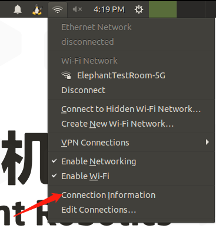
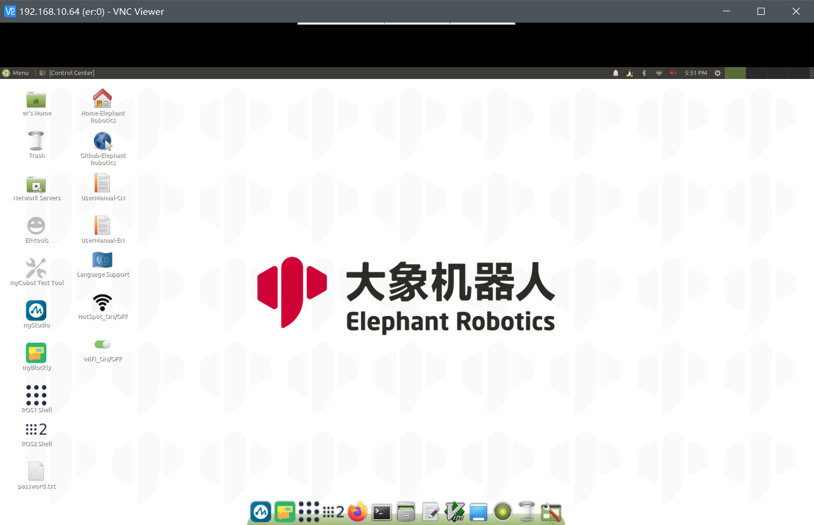
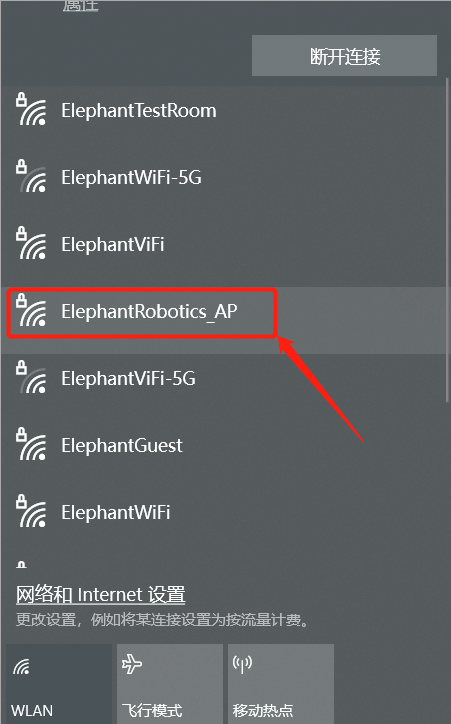
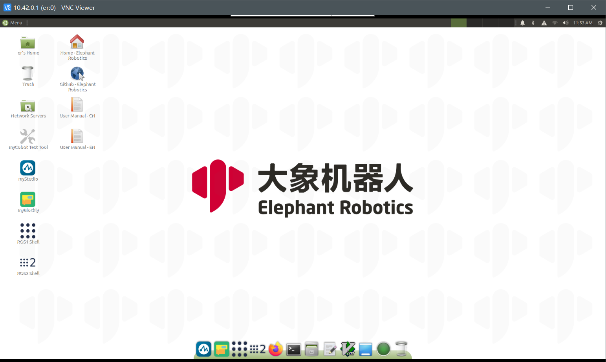

系统使用手册
5.1.1 机器人系统介绍
系统
Ubuntu 是个人桌面操作系统中使用最广泛的 linux 操作系统。对于初学者来说，熟悉 linux 环境或一些嵌入式硬件操作系统是一个不错的选择。ubuntu 官方网站还发布了树莓派（Raspberry PI）专用操作系统。
功能介绍
myStudio：固件刻录软件，用于更新和刻录新固件。
myBlockly：图形化编程软件，可直接通过拖动构件形成运行代码，控制机械臂
ROS1 Shell：直接进入编译后的 ROS1 环境，可以直接输入相应指令，运行相应的 ROS1 代码
ROS2 Shell：直接进入编译后的 ROS2 环境，可以直接输入相应指令，运行相应的 ROS2 代码
Github-ElephantRobotics：大象机器人官方开放源代码库
Home-ElephantRobotics：大象机器人网站
UserManual - CN/EN：机器人使用手册，包含有关机器人控制的所有内容
WiFi_ON/OFF：WiFi 开关，点击可打开/关闭 WiFi 功能
HotSpot_ON/OFF：热点开关，单击打开/关闭热点功能，热点名称为ElephantRobotics_AP_XXXX
Language Support：系统语言设置，点击进入系统语言设置界面
5.1.2 系统密码说明
账户密码、VNC 密码、SSH 密码、root 账户密码
- 密码：Elephant
- 密码：Elephant
如何更改密码
更改账户密码
- 使用快捷键
ctrl + alt + T打开终端 - 输入
passwd - 输入新密码两次
- 使用快捷键
更改 vnc 密码
- 使用快捷键
ctrl + alt + T打开终端 - 输入
vncpasswd - 输入两次新密码
- 使用快捷键
更改 ssh 密码
- 对于 SSH 远程连接，需要输入管理员账户的密码。无需单独更改密码
- 对于 SSH 远程连接，需要输入管理员账户的密码。无需单独更改密码
更改 root 帐户密码
- 使用快捷键
ctrl + alt + T打开终端 - 输入
sudo passwd - 输入两次新密码
- 使用快捷键
5.1.3 VNC
VNC 简介
- 是一种远程控制软件，一般用于远程解决计算机问题或软件调试
VNC Port
- 当机器人手臂和电脑连接到同一个 WiFi 时，机器人手臂的 IP 地址为端口
连接 VNC
有两种无线连接模式。第一种模式需要外接显示器才能对系统进行某些操作。具体步骤如下： 点击 "Disconnect"，断开默认的热点连接。

点击 "Enable Wi-Fi "，将显示当前可用的 WiFi

点击需要连接的 WiFi，输入密码

连接成功后，点击 "Connection Information" 查看机器人的 IP 地址

如示例所示，"192.168.10.64" 是机器人当前的 IP 地址

将电脑和机器人连接到同一个 WiFi 上，打开 VNC 查看器，输入 IP 地址（例如：输入 192.168.10.64），输入密码 Elephant，默认不指定用户名。下面是一个成功连接的示例：

第二种方法不需要连接显示器，直接将 Ubuntu 系统热点与 PC 机连接进行远程控制，但这种连接方式不具备上网冲浪的功能，只能远程控制机械臂系统。具体步骤如下：
连接热点ElephantRobotics_AP_XXXX，输入密码 Elephant

打开 VNC 查看器，输入 IP 地址 10.42.0.1 ，然后输入密码 Elephant，默认不指定用户名。下面是一个成功连接的示例：

如何提高连接流畅性
- 远程连接的流畅性取决于所连接 WiFi 的流畅性。建议连接稳定的 WiFi 进行远程控制
5.1.4 SSH
SSH 简介
- SSH 是一种网络协议，用于计算机之间的加密登录。如果用户使用 SSH 从本地计算机登录到另一台远程计算机，我们可以认为这次登录是安全的，即使中间被拦截，密码也不会泄露。
SSH 端口
- 默认端口号为 22
SSH 连接
按照 5.1.2 VNC 中的说明确认机器人的 IP 地址
单击
win + R并输入 `cmd
输入后，单击 "确定 "打开外壳界面

输入
ssh er@IP address，然后按Enter（IP 地址主要由机械臂显示，图中仅为示例）。
输入密码
Elephant
如上图所示，机械臂已通过 ssh 成功连接
如何提高连接流畅性
- 远程连接的流畅性取决于所连接 WiFi 的流畅性。建议连接稳定的 WiFi 进行远程控制。
5.1.5 网络配置
默认 AP 使用情况
- 打开机器人电源，默认情况下，系统会连接到 PI 自带的热点，热点名称为ElephantRobotics_AP_XXXX，当前 IP 地址为10.42.0.1，该热点不具备网上冲浪功能，且传输速率和信息量有限，因此最终成像会有一定的失真和色差，通信传输也会有延迟，属于正常现象。
连接至无线局域网
点击 "Disconnect" 关闭默认热点

点击 "Enable Wi-Fi "，等待显示当前可用的 WiFi

单击要连接的 WiFi 并输入 WiFi 密码

连接成功后，点击 "Connection Information" 查看 IP 地址

如示例所示，"192.168.10.64" 是机器人当前的 IP 地址

有线网络连接
打开机器人电源，机器人默认连接到系统配置的热点：
ElephantRobotics_AP_XXXX

单击 "Disconnect"，断开与默认热点的连接

将网线连接到机器人的网络端口

将网线连接到机器人的网络端口

如何设置默认 IP 地址
使用快捷键
ctrl + alt + T打开终端，输入sudo vim /etc/netplan/01-network-manager-all.yaml，修改 01-network-manager-all.yaml 文件如下：
修改后，输入
sudo netplan apply使配置生效如何自动分配 IP 地址
如果要将固定 IP 地址改为自动分配 IP 地址，请按如下步骤修改 /etc/netplan/01-network-manager-all.yaml 文件：

修改后，输入
sudo netplan apply使配置生效
5.1.6 语言配置
如何更改语言
点击 语言支持，将所需语言拖到顶部，然后重新启动系统
如何下载语言
点击Language Support，选择语言，点击下载，输入密码Elephant

5.1.7 系统分辨率开关
点击屏幕右上角的图标，选择System Settings，进入控制面板


选择 Display

切换所选分辨率并单击 Apply 进行检查，然后单击 Keep this Configuration 保存配置


5.1.8 python
Python 入门
内置安装Python3.8，无需自行安装
已安装的库：
| 包装 | 版本 |
|---|---|
| pymycobot | 3.1.5 |
| pyserial | 3.5 |
| numpy | 1.23.5 |
| opencv-contrib-python | 4.7.0.72 |
| rospkg | 1.4.0 |
| rospkg-modules | 1.4.0 |
尝试编程
如果你是 python 编程语言的新手，可以按照以下视频进行编程
您可以在以下输入字段中试用此代码：
print ("Hello World!")
运行演示
可查看具体的案例代码 Python，只需复制案例中的代码并使用即可